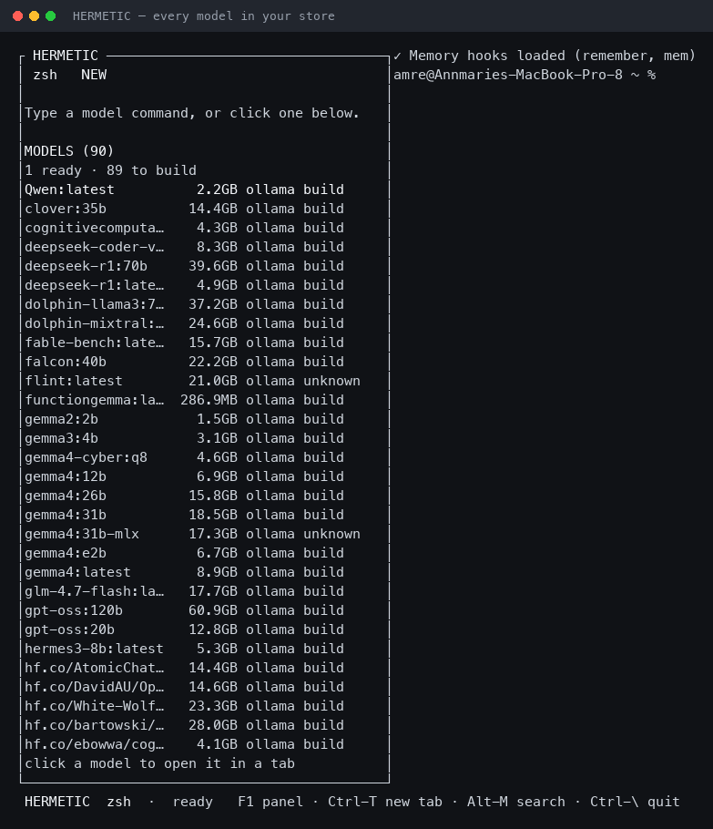
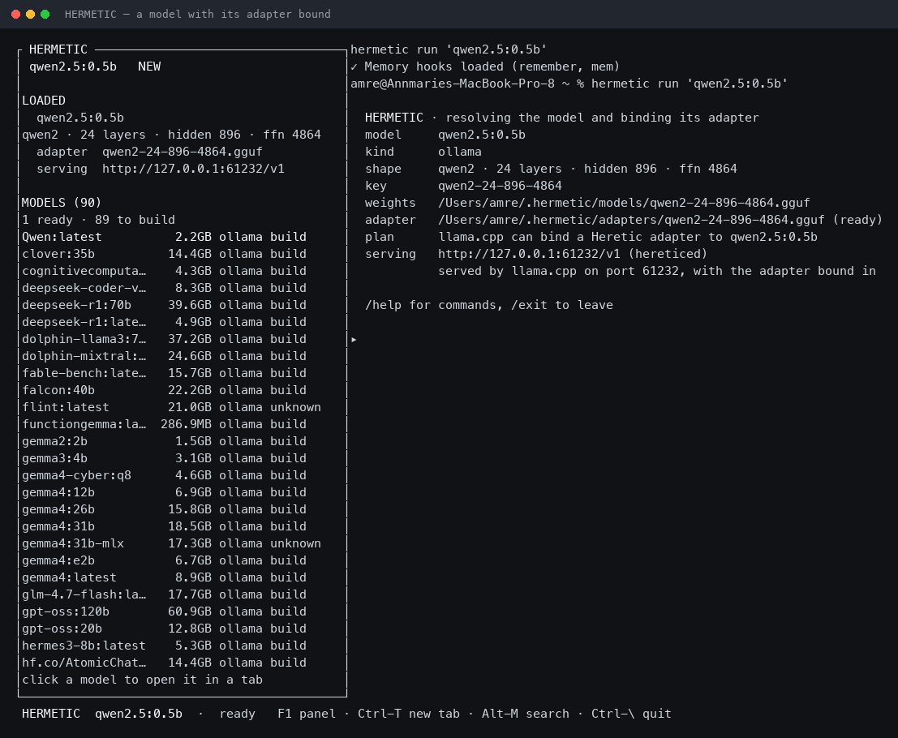

heretic's weights-level refusal removal, bound into your shell
Heretic takes a model's refusal behaviour
out of its weights — no prompt tricks, no system-prompt scaffolding.
It works, but it is a one-shot program: you point it at a model, it ablates the
weights, and you are left holding a .gguf and a separate
llama-server command.
HERMETIC puts that inside a shell. Type a model name — or click one in the panel — and it finds the original weights, runs Heretic over them if an adapter for that shape does not exist yet, binds the adapter, and hands you a live model.
$ git clone https://github.com/TheSolai/hermetic $ cd hermetic && ./install.sh $ ollama run qwen2.5:0.5b HERMETIC · resolving the model and binding its adapter model qwen2.5:0.5b shape qwen2 · 24 layers · hidden 896 · ffn 4864 adapter ~/.hermetic/adapters/qwen2-24-896-4864.gguf (ready) serving http://127.0.0.1:50473/v1 (hereticed)
Every model it can find — Ollama's store, GGUF files on disk, MLX models, the hub — listed with its size and its state. Click one and it opens in a tab.


Two questions, and nothing runtime-specific: where are the weights, and what can serve them.
ollama | ~/.ollama/models | weights can change |
gguf | a file on disk | weights can change |
mlx | a directory of safetensors | adapter folds in |
hf | the hub | weights can change |
openai | a server already running | prompt policy only |
llama.cpp | GGUF files | adapter bound at runtime |
mlx | safetensors | folded into the weights |
ollama | Ollama's store | prompt policy instead |
openai | any OpenAI-compatible server | prompt policy instead |
Every runtime that can be talked to at all speaks
POST /v1/chat/completions with server-sent events. So the terminal has
one chat client and does not care what is behind the endpoint.
Where the weights cannot be modified, the terminal says so — it never fakes it.
A model's name is no use at all here. A distilled deepseek-r1:8b is really
a Qwen3-8B. Only the shape says so — architecture, layers, hidden size,
feed-forward size — and the shape has to match to the digit, because llama.cpp will
only bind an adapter whose tensors line up exactly.
general.name). It is also often old: a file that calls itself
Qwen2-beta-4B-Chat is a Qwen1.5-4B-Chat today, and the
hub redirects the old name to the new one.Qwen:latest
is really Qwen/Qwen2.5-3B; llama.cpp only says the architecture is
qwen2, so the minor version is guessed and crossed with the
organisations that publish models of that family.
One adapter serves every checkpoint and every quantisation of that shape, so the
second time you load a model it is instant. Gated repositories are reported as
gated, using the hub's own gated field — a 401 on a
download means “gated” or “does not exist” and nothing else.
The same weights, served twice: once plain, once with the Heretic adapter bound.
Heretic's own evaluation set (mlabonne/harmful_behaviors, first 100),
counted with Heretic's own refusal markers.
Reproduce it yourself with engine/bridge/scripts/ab_refusal_bench.py:
two llama-servers, one set of weights, one with --lora.
$ git clone https://github.com/TheSolai/hermetic $ cd hermetic $ ./install.sh
That is the whole thing. It checks what it needs, builds the engine's virtualenv
(the vendored Heretic), builds the two binaries, and installs
~/Applications/HERMETIC.app with a shortcut on your Desktop.
macOS, Rust, and llama-server on the PATH.
ollama is optional, but that is where most models come from.
A Hugging Face token (HF_TOKEN) is optional too, and unlocks the gated
families.